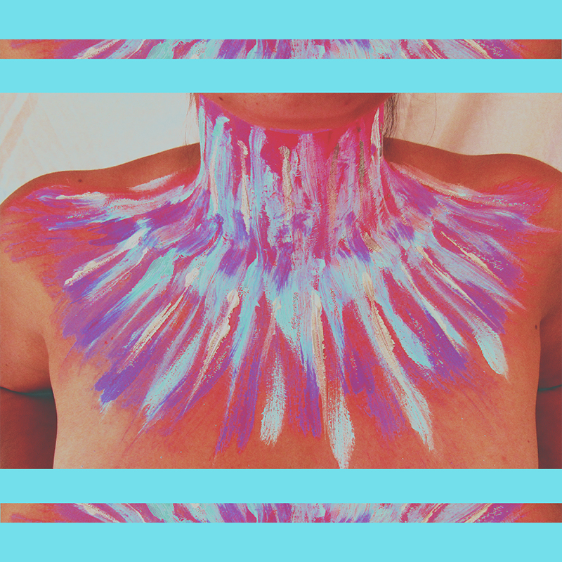
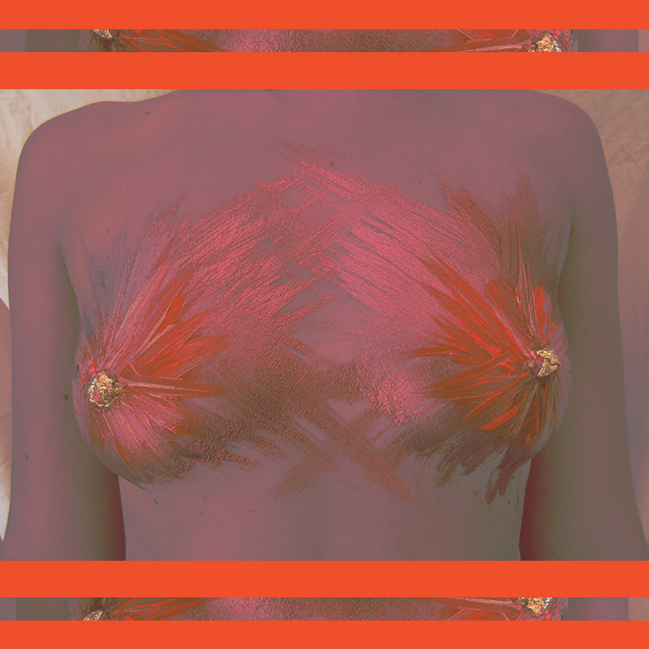
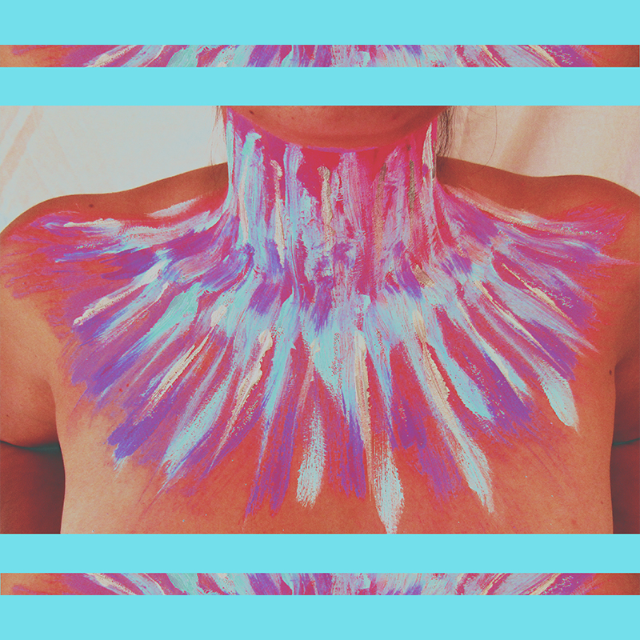
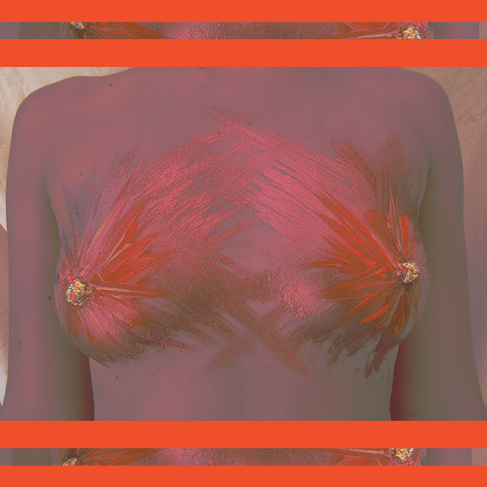
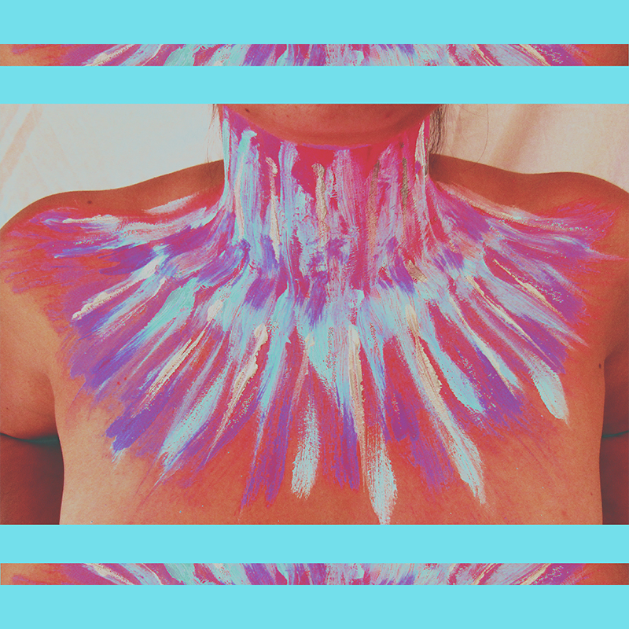
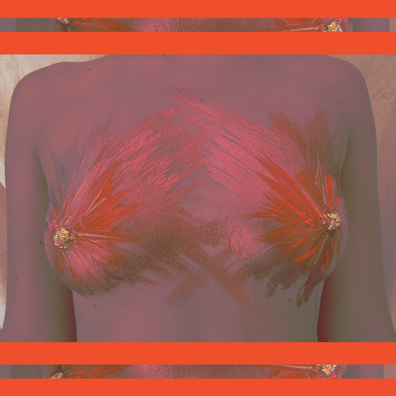

by Alayne de Paname
En première année de Master Design à l'ECV, je suis passionnée par mes études et très sensible à l'Edition et à l'Art abstrait (j'aime faire des tâches partout), j'aime également voyager (beaucoup), Gesaffelstein aussi, Mario Testino, Miranda Lorikeet et j'ai un sacré penchant pour les cafés glacés.
Ce que j'apprécie dans l'art abstrait c'est de ne prendre aucune décision, c'est de laisser aller le mouvement, de ne pas réfléchir trop tôt au choix de couleur non plus. Créer sans se soucier du résultat.
Biensur que je ne m'épanouie pas que dans ce domaine J'aime beaucoup expérimenter des photomontages un peu wtf dans le domaine du kitsch. Mélanger du aesthétic, du vaporwave avec des photos scandales de paris hilton, j'adore.
Aline Etourneau.

